Electric Aircraft (VTOL) Battery Design Exploration
This example models an electric aircraft (VTOL) power network. It enables rapid exploration of the design space for the battery and cooling system.
In this example, an VTOL (vertical takeoff and landing) aircraft is modeled using Simscape. 8 propellers are driven by motors connected in an electrical network to a battery. The battery model is parameterized using MATLAB so that parameter sweeps can be used to determine the right size for the battery pack. Based on that information, engineers can select an appropriate cell, architect the battery pack, and design the cooling system.
In the main model, the battery model can be configured to have the right amount of detail for the engineering task. Test harness models are used to explore designs for the battery sub packs and the cooling system.
Contents
- Model
- Aircraft Subsystem
- Motor Subsystem
- Battery Subsystem
- DC Power Distribution Subsystem
- Simulation Results from Simscape Logging: Mission, Abstract Battery
- Sweep Battery Capacities and Payloads, Energy Density 200 W*hr/kg
- Sweep Battery Capacities and Payloads, Energy Density 240 W*hr/kg
- Mission Results with Selected Battery Cell
- Mission Results with Temperature Gradient Across Sub Packs
- Mission Results with Cooling System, Lumped Modules
Model
The electric aircraft model includes a battery, two DC networks, and a mechanical model of the aircraft which acts a load on the high voltage DC network. The low voltage DC network includes a set of loads that turn on and off during the flight cycle.
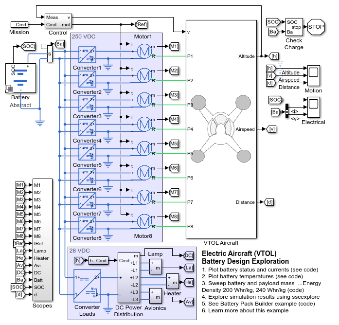Aircraft Subsystem
This subsystem models the aircraft chassis and propellers. Eight shafts from the electric motors drive the propellers which generate thrust to lift the aircraft. All propellers are connected to an inertia block which models the inertia from the chassis, battery, and payload. Ground contact and aerodynamic drag are also modeled.
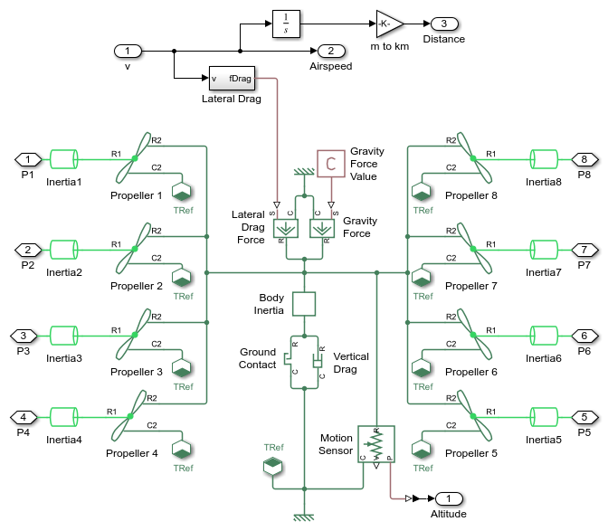Motor Subsystem
This subsystem represents electric motors and drive electronics operating in torque-control mode, or equivalently current-control mode. The motors' permissible range of torques and speeds is defined by a torque-speed envelope.
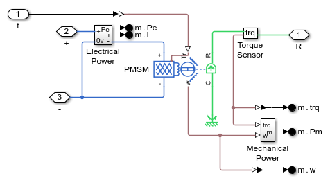Battery Subsystem
This subsystem shows a set of battery models which can be selected for use with this model.
- Abstract: A behavioral model which can be characterized and sized based on only a few parameters
- Specific: An equivalent circuit model that models a specific cell based on lookup tables derived from datasheet curves.
- The remaining models are battery packs constructed using the Battery Pack Builder in Simscape Battery.
DC Power Distribution Subsystem
This subsytem models the breakers that open and close to connect and disconnect loads from the low voltage DC network. The varying conditions affect the power drawn from the network, the range of the aircraft, and the power requirements for the power lines in the aircraft
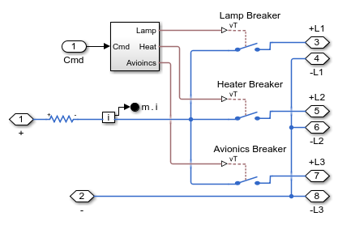Simulation Results from Simscape Logging: Mission, Abstract Battery
The plots below show the results of a single simulation. The aircraft ascends to cruising altitude and then flies at cruise speed until the battery reaches 30% SOC. The first plot shows the altitude and airspeed, the second plot shows electrical measurements. For this initial mission, the generic battery is used.
Sweep Battery Capacities and Payloads, Energy Density 200 W*hr/kg
The plots below show the effect of battery capacity and payload on the flight range of the aircraft. This sweep is done with battery energy density set to 200 W*hr/kg. The relationship between the battery size and the range is not linear because increasing battery capacity also increases the overall weight of the aircraft. Slightly less than half of the design space explored will permit a flight range of over 25km (15.5 miles).
Sweep Battery Capacities and Payloads, Energy Density 240 W*hr/kg
The plots below show the effect of battery capacity and payload on the flight range of the aircraft. This sweep is done with battery energy density set to 240 W*hr/kg. With this energy density, the flight range for 80 kg payload is above 25 km if the battery capacity is 180 A*hr.
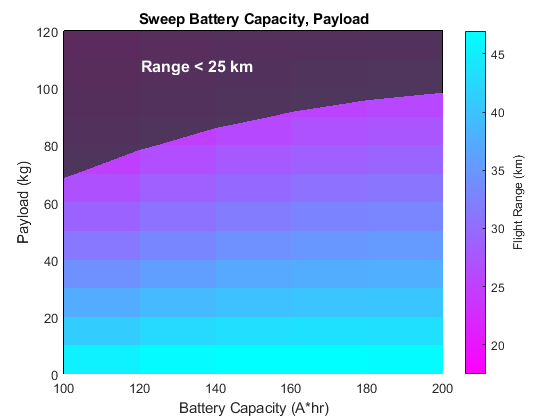Mission Results with Selected Battery Cell
A specific battery cell with energy density of more than 240 W*hr/kg is selected and the battery model is parameterized with data from the data sheet. The single cell model is amplified to model a battery pack with enough cells in series to match the voltage requirements, and enough cells in parallel to match the capacity requirements. With 80 kg payload, the flight range is more than 25 km.
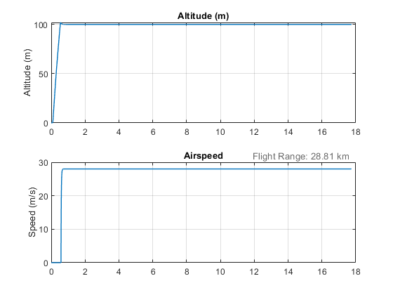 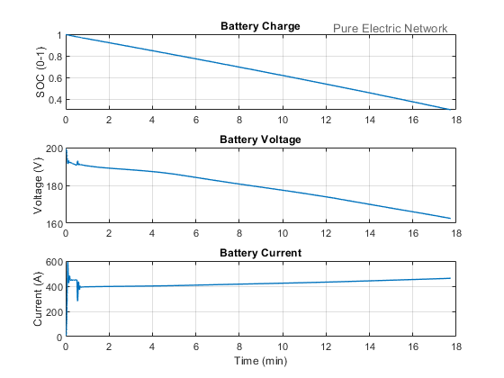Mission Results with Temperature Gradient Across Sub Packs
Using the Battery Pack Builder from Simscape Battery, 8 battery packs are assembled using the selected battery cell. To determine the requirements for the cooling system, a temperature gradient of 3°C is set using Ideal Temperature Source blocks from Simscape. The same mission is run and we check the battery cell temperatures to see that they are all lower than the maximum (45°C) and that the maximum delta between cell temperatures is 5°C.
This subsystem shows the connected sub packs and temperature boundary conditions
This subsystem shows the electrothermal models of the modules, each parameterized with the cell data used previously. Four modules are connected electrically in series.

This subsystem shows the temperature boundary conditions for each module
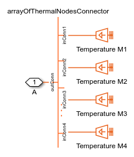The plot below checks the flight range.
The plot below shows the temperatures of each module. For this test, it is assumed all cells in each module have the same temperature.
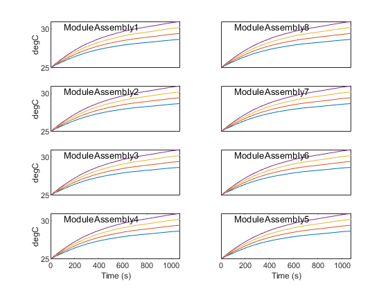Mission Results with Cooling System, Lumped Modules
Using the Battery Pack Builder from Simscape Battery, 8 battery packs are assembled using the selected battery cell. Coolant is pushed through channels in a cooling plate with parallel channels. The same mission is run and we check the battery cell temperatures to see that they are all lower than the maximum (45°C) and that the maximum delta between cell temperatures is 5°C.
This subsystem shows the connected sub packs and the cooling plates. For this test, it is assumed all cells in each module have the same temperature.
The plot below checks the flight range.
The plot below shows the temperatures of each module. For this simple test, it is assumed all cells in each module have the same temperature.
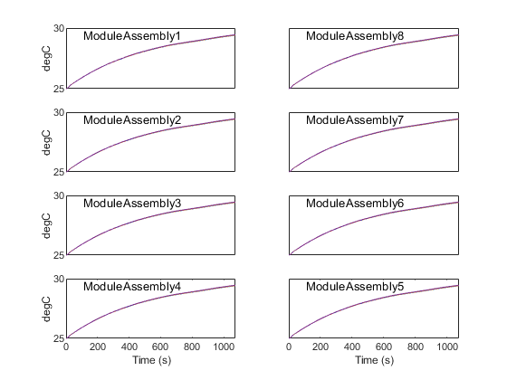 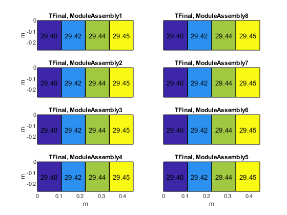